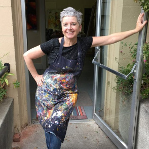

Painting and sculpting are ways to create visual text.
I consider myself a process artist. My work leans toward the abstract. Although I begin my work with something in mind, I am open to exploration throughout the development of my art. The plan will often change in response to opportunities that arise during the creative process.
I frequently shift between mediums. For me, painting is a vigorous practice. Currently, I am working primarily in layers of oil washes over plaster. It is a medium which allows for exploration and I am continuing to expand and develop how I use this method. If I am feeling like everything needs to slow down I will spend some time working in clay.
My subjects most often are inspired by organics; where I spend time looking at things under a microscope or gather inspiration from the ocean, pieces of shell and other found materials. I am keenly interested in counterbalances; in nature, in people, in relationships.
Joining the studios of ARTHOUSE, Sacramento, California in January 2019, I also maintain a studio on the North Coast of California where I continue to find new inspiration.
You can reach me via email at .
History
• ARTHOUSE Gallery Co-manager, Sacramento, California 2021 - Present
• ARTHOUSE Studio Artist, Linda Green Arts, Sacramento, California 2019 - Present
• Curator for Jimmy's Gallery for Emerging Artists, Sacramento, Califormia 2013 - Present
• Art Instructor, Linda Green Arts, Auburn, California 2007 - 2021
• Artist in Residence, OLAS - Old Library Artist Studios, Auburn, California 2016 - 2017
• Editor of PlacerArts Palette, 2015 - 2017
• Program Coordinator, PlacerArts ARTspace, Placer County, California 2011 - 2017
• Artist in Residence, The Arts Building, Auburn, California 2000 - 2015
• Program Director, PlacerArts Artists Gym for emerging artists 2012 - 2014
• Art Instructor, Creative Arts and Music Center, Granite Bay, California 2000 - 2012
Solo and Group Shows
• Sparrow Gallery, Sacramento, Ca. - Water's Edge 2021
• Art in the Redwoods (First Place in Oil, Acrylic and Mixed), Gualala, Ca. - 2021
• Jimmy's Barber Garage, Sacramento, Ca. - 2021
• General Gomez Life Gallery, Auburn, Ca. - AIR Show 2018
• Embellishments Gallery, Auburn, Ca. - OLAS Reunion Show 2018
• General Gomez Life Gallery, Auburn, Ca. - Women by Women 2016
• The Arts Building Gallery, Auburn, Ca. - AIR Show 2014
• The Arts Building Alley Gallery, Auburn, Ca. - Naked Alley 2014
• Oz Gallery, Auburn, Ca. 2013
• The Arts Building Gallery, Auburn, Ca. - The Peep Show 2013
• Sierra Moon Goldsmith, Auburn, Ca. 2012
• Gallery 2237 Roseville Ca. 2012
• Oz Gallery Auburn Ca. 2011
• Chief's Table Roseville Ca. 2011
• 20th Street Gallery Sacramento Ca. - 20/20 Show 2009
• Tsudas Deli Auburn Ca. 2009
• Blue Line Gallery Roseville Ca. - Faces Show 2009
• California Sacramento State University - The Witt Gallery 2009
• KBMR Sacramento Ca. 2009
• The Arts Building Auburn Ca. - Artist in Residence Show 2008
• Gallery 2237 Roseville Ca. 2007
• Artful Blend Roseville Ca. 2006
• Cascades Roseville Ca. 2004
• Latitudes Restaurant Auburn Ca. 2004
• Artful i Gallery Roseville Ca. 2004
• Gallery 2237 Roseville Ca. 2003